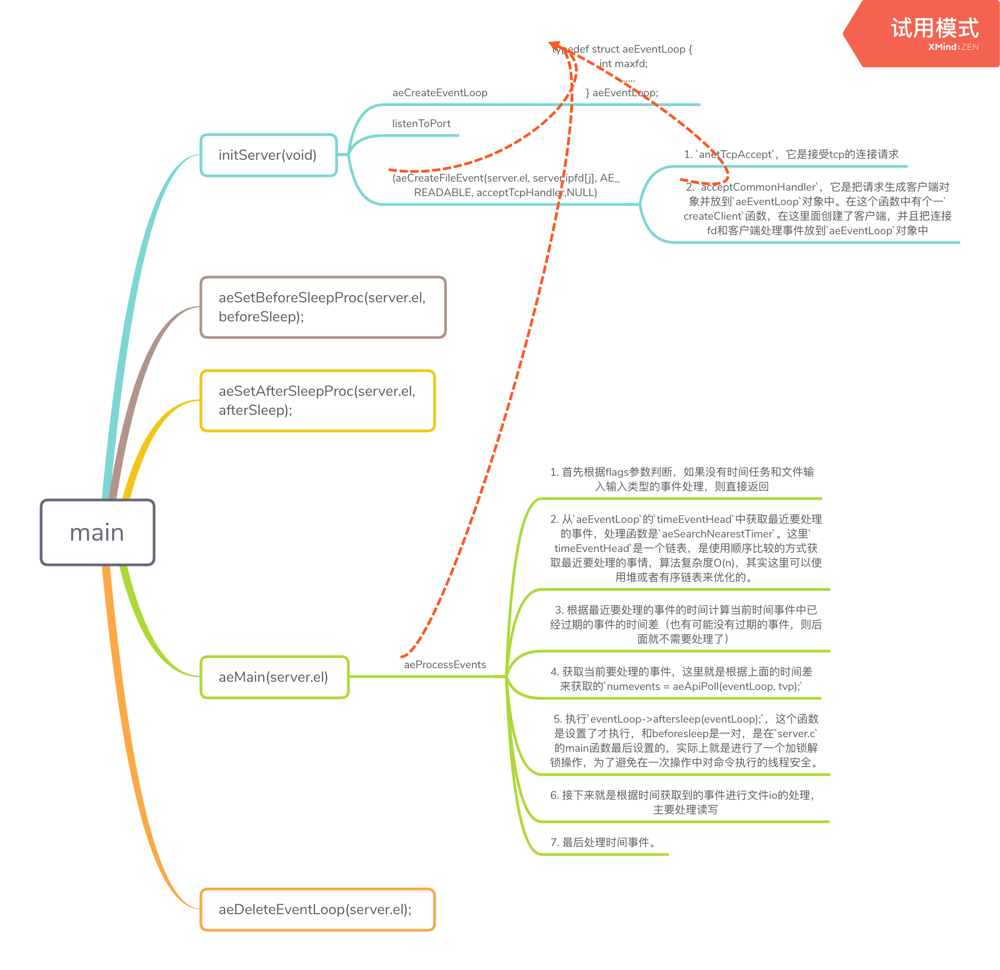

前言
上一篇分析了一下redis的大致框架和启动过程，这篇我想分析一下redis的事件处理模型，当然也包含了网络事件的处理模型。redis除了其高效的nosql存储非常有名以外，另外一个比较被称赞的就是其服务效率。像这类服务的是怎么设计的，为什么这么高效。所以我想这里来分析分析。
事件驱动框架
redis的代码中有一个ae框架，是整个redis事件框架的基础，所以这里先来看看整个东东。按照ae.c文件中的注释说A simple event-driven programming library. Originally I wrote this code for the Jim's event-loop (Jim is a Tcl interpreter) but later translated it in form of a library for easy reuse. 翻译一下就是：这是一个简单的事件驱动编程库，原本是为Jim的一个事件循环程序，但是后来就变成了要开发一个简单可重用的库。
来看看ae中的核心数据结构，分析代码，我认为首先要把数据结构理清楚，说的简单点程序就是数据结构和算法逻辑结合。数据结构是骨，算法和逻辑是血肉经脉。所以一般分析代码都是要先看其核型数据结构。
核心数据结构
在ae这个事件驱动框架的核心数据结构就是下面这个，在上篇分析的代码中创建中就有分析到redis的main函数最后就是启动这个数据结构。
// ae.h
/* State of an event based program */
typedef struct aeEventLoop {
int maxfd; /* highest file descriptor currently registered 注册的最高并发文件描述符*/
int setsize; /* max number of file descriptors tracked 最大可跟踪的文件描述符*/
long long timeEventNextId;
time_t lastTime; /* Used to detect system clock skew 系统时间存储*/
aeFileEvent *events; /* Registered events 注册的事件 这是一个数组，看初始化代码是建立了10128大小的数组*/
aeFiredEvent *fired; /* Fired events */
aeTimeEvent *timeEventHead;
int stop;
void *apidata; /* This is used for polling API specific data*/
aeBeforeSleepProc *beforesleep;
aeBeforeSleepProc *aftersleep;
} aeEventLoop;
这个结构体中最重要的就是events这个结构了，里面是注册的所有io相关的事件，有可能是本地接口，有可能是外部请求的接口。
初始化过程
在redis的server.c文件的main函数最后有这样一句函数aeMain(server.el)，其中server.el就是调用ae.c中的函数进行创建的，下面这段代码就在server.c的initServer(void)函数中。
server.el = aeCreateEventLoop(server.maxclients+CONFIG_FDSET_INCR); // 这里的参数就制定了上面events这个数组的大小10128.
if (server.el == NULL) {
serverLog(LL_WARNING,
"Failed creating the event loop. Error message: '%s'",
strerror(errno));
exit(1);
}
}
在aeCreateEventLoop函数中就创建了aeEventLoop结构体，这里面申请了events了空间，并且做了初始化。在写c程序中初始化这个习惯一定要有，因为一般申请的内存单中的值是不确定的，为了避免使用上的意外，都要进行一次初始化操作。
事件循环调度
数据结构创建好，接下来就看看如何使用这个结构体，就是要看aeMain这个函数的实现过程。
void aeMain(aeEventLoop *eventLoop) {
eventLoop->stop = 0;
while (!eventLoop->stop) { // 进入事件循环
if (eventLoop->beforesleep != NULL)
eventLoop->beforesleep(eventLoop);
aeProcessEvents(eventLoop, AE_ALL_EVENTS|AE_CALL_AFTER_SLEEP); // 这里进行循环处理事件
}
}
aeProcessEvents这才是整个处理的核心，这里处理定时事件，文件读写事件，这个函数创的最后一个参数决定它可以处理那些类型的事件，也是机制和策略分离的一种设计思路。具体的处理类型在这个函数定义的头部注释中写的非常明白。
再来看看这个函数的处理过程：
- 首先根据flags参数判断，如果没有时间任务和文件输入输入类型的事件处理，则直接返回
- 从
aeEventLoop的timeEventHead中获取最近要处理的事件，处理函数是aeSearchNearestTimer。这里timeEventHead是一个链表，是使用顺序比较的方式获取最近要处理的事情，算法复杂度O(n)，其实这里可以使用堆或者有序链表来优化的。 - 根据最近要处理的事件的时间计算当前时间事件中已经过期的事件的时间差（也有可能没有过期的事件，则后面就不需要处理了）
- 获取当前要处理的事件，这里就是根据上面的时间差来获取的
numevents = aeApiPoll(eventLoop, tvp); - 执行
eventLoop->aftersleep(eventLoop);，这个函数是设置了才执行，和beforesleep是一对，是在server.c的main函数最后设置的，实际上就是进行了一个加锁解锁操作，为了避免在一次操作中对命令执行的线程安全。 - 接下来就是根据时间获取到的事件进行文件io的处理，主要处理读写
- 最后处理时间事件。
redis的客户端链接处理
这里提出2个问题：
- 客户端的连接请求那里处理
- 怎么和现在的ae处理框架联系起来
下面跟随这两个问题进行进一步的分析。
这里我们要回到server.cmain函数中的事件注册中来了，如下的注册过程中把acceptTcpHandler注册到事件中，在所有监听端口fd上都绑定了这个处理事件。
/* Create an event handler for accepting new connections in TCP and Unix
* domain sockets. */
for (j = 0; j < server.ipfd_count; j++) {
if (aeCreateFileEvent(server.el, server.ipfd[j], AE_READABLE,
acceptTcpHandler,NULL) == AE_ERR)
{
serverPanic(
"Unrecoverable error creating server.ipfd file event.");
}
}
在acceptTcpHandler设置断点我们再用客户端连接看看，方法还是和上次的方法一样的。可以看到就是从aeProcessEvents中去调用acceptTcpHandler的。实际上就是根据监听端口fd的事件来处理的。
(lldb) bt
* thread #1, queue = 'com.apple.main-thread', stop reason = breakpoint 1.1
* frame #0: 0x000000010001bdc0 redis-server`acceptTcpHandler(el=0x000000010042f240, fd=7, privdata=0x0000000000000000, mask=1) at networking.c:728
frame #1: 0x00000001000046bc redis-server`aeProcessEvents(eventLoop=0x000000010042f240, flags=11) at ae.c:443
frame #2: 0x00000001000049db redis-server`aeMain(eventLoop=0x000000010042f240) at ae.c:501
frame #3: 0x00000001000105be redis-server`main(argc=1, argv=0x00007ffeefbffb88) at server.c:4197
frame #4: 0x00007fff5d3e108d libdyld.dylib`start + 1
frame #5: 0x00007fff5d3e108d libdyld.dylib`start + 1
这里我顺便打印了一下acceptTcpHandler(el=0x000000010042f240...中的el这个结构体，看看目前的最大连接fd是7，setsize是10128等。
(lldb) p *el
(aeEventLoop) $1 = {
maxfd = 7
setsize = 10128
timeEventNextId = 1
lastTime = 1553153284
events = 0x000000010025c000
fired = 0x000000010100d600
timeEventHead = 0x0000000100305cb0
stop = 0
apidata = 0x000000010042f290
beforesleep = 0x0000000100009fc0 (redis-server`beforeSleep at server.c:1358)
aftersleep = 0x000000010000a100 (redis-server`afterSleep at server.c:1415)
}
(lldb)
好了回来再看acceptTcpHandler内部的实现，这个函数中主要有2个函数调用非常重要：
anetTcpAccept，它是接受tcp的连接请求acceptCommonHandler，它是把请求生成客户端对象并放到aeEventLoop对象中。在这个函数中有个一createClient函数，在这里面创建了客户端，并且把连接fd和客户端处理事件放到aeEventLoop对象中，如下面的代码，
client *createClient(int fd) {
client *c = zmalloc(sizeof(client));
/* passing -1 as fd it is possible to create a non connected client.
* This is useful since all the commands needs to be executed
* in the context of a client. When commands are executed in other
* contexts (for instance a Lua script) we need a non connected client. */
if (fd != -1) {
anetNonBlock(NULL,fd);
anetEnableTcpNoDelay(NULL,fd);
if (server.tcpkeepalive)
anetKeepAlive(NULL,fd,server.tcpkeepalive);
if (aeCreateFileEvent(server.el,fd,AE_READABLE,
readQueryFromClient, c) == AE_ERR) // 这里首先是把readQueryFromClient绑定到事件处理对象`aeEventLoop`中
// readQueryFromClient这里读取客户端请求，进行处理。
{
close(fd);
zfree(c);
return NULL;
}
}
......
因为所有的事件都是放到事件处理对象aeEventLoop中，而这个对象的调度执行都是aeProcessEvents函数，所以在我们进行堆栈查看的时候都只会看到这样的调用路径：main->aeMain->aeProcessEvents->xxx。如下面，我把readQueryFromClient打断点之后是这样的调用结果。
(lldb) bt
* thread #1, queue = 'com.apple.main-thread', stop reason = breakpoint 1.1
* frame #0: 0x0000000100019e91 redis-server`readQueryFromClient(el=0x000000010042ee00, fd=8, privdata=0x0000000100801000, mask=1) at networking.c:1508
frame #1: 0x00000001000046bc redis-server`aeProcessEvents(eventLoop=0x000000010042ee00, flags=11) at ae.c:443
frame #2: 0x00000001000049db redis-server`aeMain(eventLoop=0x000000010042ee00) at ae.c:501
frame #3: 0x00000001000105be redis-server`main(argc=1, argv=0x00007ffeefbffb88) at server.c:4197
frame #4: 0x00007fff5d3e108d libdyld.dylib`start + 1
frame #5: 0x00007fff5d3e108d libdyld.dylib`start + 1
这里对client这个结构体没有展开分析，这个其实也是非常重要的，要理解redis的客户端和服务端的交互，就要多理解服务端中这个结构体的构成。但是这里不是今天分析的重点。
这里我们就看清楚了，所有的事件处理请求都会放到aeEventLoop这个核心对象中，而且所有的事件处理都是围绕这个数据结构的。从客户端的连接建立，到客户端请求事件的处理都是由这个结构体调度触发的。
总结
通过上面的分析，我们应该可以理解了redis的基本事件处理模型。aeEventLoop是整个redis的事件处理核心，aeProcessEvents不断的循环处理这个结构，所有的事件都是根据处理方式异步加入到aeEventLoop这个结构中，再由aeProcessEvents调度之心。主要的执行事件就是时间定时事件，IO读写事件。
最后附上一个分析脑图：

关注「黑光技术」，关注大数据+微服务